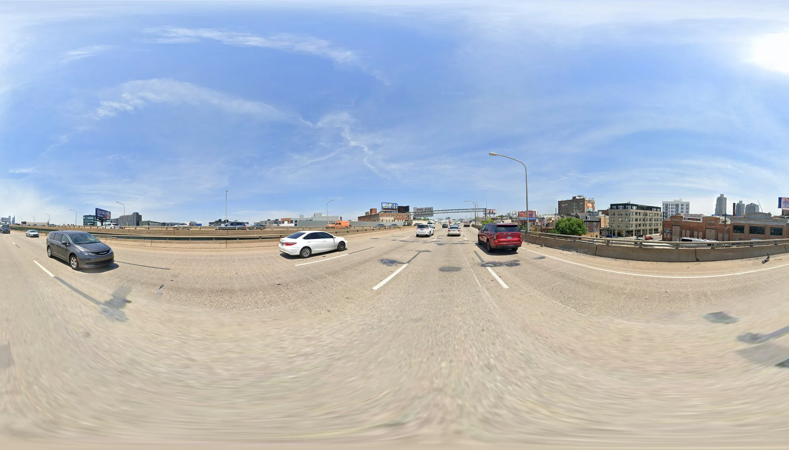

Data Collection
Sampling Strategy, Street View Download, and Census Integration
The Foundation of Spatial Analysis
Any study of urban happiness must begin with data that captures both the visual character of places and the social context of neighborhoods. Our pipeline integrates three distinct sources: road network data for systematic sampling, Google Street View imagery for visual features, and Census data for socioeconomic context.
Philadelphia as Study Area
Philadelphia offers an ideal laboratory for studying urban happiness. The city contains everything from the dense, walkable streets of Center City to quiet residential suburbs in the Northeast and Northwest, industrial zones along the Delaware River, and historic neighborhoods like Society Hill and Germantown. This diversity allows us to examine how different urban forms relate to perceived happiness.
Where Are the Happy Places?
The 28 happiness points collected from Drexel University students reveal a striking spatial pattern:
Interactive map: Click on markers to view details. Drag to rotate, scroll to zoom.
The clustering is immediately apparent. Most happiness points concentrate in the urban core—near commercial districts, cultural institutions, and the university campus. Several align along the Delaware and Schuylkill Rivers, where waterfront parks and trails provide recreational amenities. Notably absent are the outer residential neighborhoods that comprise most of Philadelphia’s land area. This pattern already hints at what our analysis will confirm: happiness is associated with urban vitality rather than quiet residential settings.
Generating Sampling Points
Following the approach established by Li & Ratti (2019), we generate sampling points at regular intervals along road centerlines. A 200-meter interval balances comprehensive coverage against computational feasibility, producing approximately 40,000 points distributed across Philadelphia’s street network.
The projection system matters more than it might seem. We use NAD 1983 Pennsylvania South (EPSG:2272) rather than WGS84 because at Philadelphia’s latitude, unprojected coordinates would introduce roughly 15% error in distance calculations due to meridian convergence.
#| eval: false
import geopandas as gpd
import pandas as pd
from shapely.geometry import Point
from pathlib import Path
def generate_sampling_points(centerline_path, boundary_path, interval_m=200):
"""
Generate sampling points along road centerlines at regular intervals.
Parameters:
-----------
centerline_path : str
Path to road centerline shapefile
boundary_path : str
Path to city boundary shapefile
interval_m : float
Sampling interval in meters (default: 200)
Returns:
--------
GeoDataFrame with sampling points
"""
# Define projection - NAD 1983 Pennsylvania South (ft)
target_crs = "EPSG:2272"
# Read and project data
centerline = gpd.read_file(centerline_path).to_crs(target_crs)
boundary = gpd.read_file(boundary_path).to_crs(target_crs)
# Clip roads to city boundary
centerline_clipped = gpd.clip(centerline, boundary)
# Convert interval from meters to feet
interval_ft = interval_m * 3.28084
# Generate points along each road segment
sample_points = []
sample_attributes = []
for idx, row in centerline_clipped.iterrows():
line = row.geometry
if line.geom_type == 'LineString':
_process_linestring(line, idx, interval_ft, sample_points, sample_attributes)
elif line.geom_type == 'MultiLineString':
for sub_idx, single_line in enumerate(line.geoms):
_process_linestring(single_line, f"{idx}_{sub_idx}", interval_ft,
sample_points, sample_attributes)
# Create GeoDataFrame
gdf = gpd.GeoDataFrame(sample_attributes, geometry=sample_points, crs=target_crs)
gdf['point_id'] = range(1, len(gdf) + 1)
# Add WGS84 coordinates for API calls
gdf_wgs84 = gdf.to_crs("EPSG:4326")
gdf['longitude'] = gdf_wgs84.geometry.x
gdf['latitude'] = gdf_wgs84.geometry.y
return gdf
def _process_linestring(line, street_id, interval_ft, points_list, attrs_list):
"""Helper function to process a single LineString geometry."""
line_length = line.length
num_points = int(line_length / interval_ft) + 1
for i in range(num_points):
distance = i * interval_ft
if distance <= line_length:
point = line.interpolate(distance)
points_list.append(point)
attrs_list.append({
'point_type': 'road_sample',
'street_id': street_id,
'distance_ft': round(distance, 2)
})Philadelphia’s road data contains both LineString and MultiLineString geometries—the latter occurring where a single road record spans multiple disconnected segments, such as roads split by parks or rivers. We process each component separately to maintain accurate sampling. By clipping to the city boundary first, we ensure all sampling points fall within Philadelphia’s limits.
| Metric | Value |
|---|---|
| Total road segments | ~47,000 |
| Sampling interval | 200 meters |
| Generated points | ~40,000 |
| Coverage area | 142 sq mi |
Google Street View Download
Google Street View provides the visual foundation for our analysis. Rather than using the standard Static API (which limits images to 640×640 pixels), we employ a tile-based download method that stitches together high-resolution panoramic images at 3328×1664 pixels—over 8× more pixels for semantic segmentation.
#| eval: false
import requests
from PIL import Image
from io import BytesIO
import time
class GSVDownloader:
"""
Google Street View panorama downloader using tile stitching method.
This approach downloads individual tiles and stitches them together,
providing higher resolution than the standard Static API limit.
"""
def __init__(self, api_key):
self.api_key = api_key
self.metadata_url = "https://maps.googleapis.com/maps/api/streetview/metadata"
# Tile configuration for each zoom level
self.grid_sizes = {
0: (1, 1), # 512 x 512
1: (2, 1), # 1024 x 512
2: (4, 2), # 2048 x 1024
3: (7, 4), # 3584 x 2048 -> cropped to 3328 x 1664
4: (13, 7), # 6656 x 3584
5: (26, 13) # 13312 x 6656
}
def get_metadata(self, lat, lon):
"""
Retrieve GSV metadata for a location.
Returns pano_id, capture date, and actual location if available.
"""
params = {
'location': f"{lat},{lon}",
'key': self.api_key
}
response = requests.get(self.metadata_url, params=params, timeout=10)
data = response.json()
if data.get('status') == 'OK':
return {
'pano_id': data['pano_id'],
'lat': data['location']['lat'],
'lon': data['location']['lng'],
'date': data.get('date'),
'status': 'OK'
}
return {'status': data.get('status', 'UNKNOWN')}
def download_panorama(self, pano_id, output_path=None, zoom=3, tile_size=512):
"""
Download and stitch panorama tiles.
"""
cols, rows = self.grid_sizes[zoom]
# Create blank canvas
panorama = Image.new('RGB', (cols * tile_size, rows * tile_size))
# Download and place each tile
for y in range(rows):
for x in range(cols):
tile_url = (f"https://cbk0.google.com/cbk?"
f"output=tile&panoid={pano_id}&zoom={zoom}&x={x}&y={y}")
try:
response = requests.get(tile_url, timeout=10)
if response.status_code == 200:
tile = Image.open(BytesIO(response.content))
panorama.paste(tile, (x * tile_size, y * tile_size))
except Exception as e:
print(f"Failed to download tile ({x},{y}): {e}")
time.sleep(0.02) # Rate limiting
if output_path:
panorama.save(output_path, 'JPEG', quality=95)
return panoramaThe tile-based approach offers practical advantages: direct tile access produces clean images without the Google logo watermark, and tile requests don’t count against the paid Static API quota.
Coverage analysis revealed that approximately 98% of sampling points have available Street View imagery. The ~2% without coverage typically fall in recently developed areas, private roads, or parks without street access.
| Metric | Value |
|---|---|
| Points with GSV metadata | ~40,000 |
| Image dimensions | 3328 × 1664 px |
| Total storage | ~60 GB |
A Visual Tour of Philadelphia
The downloaded panoramas capture the remarkable diversity of Philadelphia’s urban fabric:



From lush parks and intimate residential streets to commercial corridors and highway infrastructure—this variation is essential for building a model that can distinguish environmental characteristics associated with happiness. The 28 happiness points from Drexel University’s study are included in our sampling points dataset and processed alongside all other road samples.
Census Data Integration
The visual character of a street tells only part of the story. A clean street in a high-income neighborhood may feel different from an identical street in a high-poverty area due to ambient factors—noise levels, social activity patterns, maintenance standards—that aren’t directly visible in a photograph.
We selected Census variables that prior research has linked to neighborhood quality and perceived well-being:
#| eval: false
class CensusDownloader:
"""
Download and process Census ACS 5-year estimates.
Focuses on variables related to:
- Demographics (age, race)
- Economic status (income, poverty)
- Education
- Housing characteristics
"""
def __init__(self, api_key):
self.api_key = api_key
self.base_url = "https://api.census.gov/data"
# Philadelphia: State 42 (PA), County 101
self.state = "42"
self.county = "101"
# ACS variables of interest
self.variables = {
# Population
'B01003_001E': 'total_pop',
'B01002_001E': 'median_age',
# Race
'B02001_002E': 'pop_white',
'B02001_003E': 'pop_black',
# Income & Poverty
'B19013_001E': 'median_income',
'B17001_002E': 'pop_poverty',
# Education (25+)
'B15003_022E': 'pop_bachelor',
'B15003_023E': 'pop_master',
'B15003_025E': 'pop_doctorate',
# Housing
'B25003_001E': 'total_housing',
'B25003_002E': 'owner_occupied',
# Employment
'B23025_003E': 'labor_force',
'B23025_005E': 'unemployed',
}
def download(self, year=2022):
"""Download ACS 5-year estimates for Philadelphia Census Tracts."""
var_string = ','.join(self.variables.keys())
url = f"{self.base_url}/{year}/acs/acs5"
params = {
'get': f'NAME,{var_string}',
'for': 'tract:*',
'in': f'state:{self.state} county:{self.county}',
'key': self.api_key
}
response = requests.get(url, params=params, timeout=60)
data = response.json()
# Convert to DataFrame
df = pd.DataFrame(data[1:], columns=data[0])
# Rename columns
for code, name in self.variables.items():
if code in df.columns:
df = df.rename(columns={code: name})
# Create GEOID for spatial join
df['GEOID'] = df['state'] + df['county'] + df['tract']
return df
def calculate_rates(self, df):
"""Calculate derived variables (percentages and rates)."""
# Safely divide, handling zeros
def safe_div(num, denom):
return num / denom.where(denom > 0)
df['pct_white'] = safe_div(df['pop_white'], df['total_pop'])
df['poverty_rate'] = safe_div(df['pop_poverty'], df['total_pop'])
# College education rate
df['pop_college'] = (df['pop_bachelor'].fillna(0) +
df['pop_master'].fillna(0) +
df['pop_doctorate'].fillna(0))
df['pct_college'] = safe_div(df['pop_college'], df['total_pop'])
df['pct_owner_occupied'] = safe_div(df['owner_occupied'], df['total_housing'])
df['unemployment_rate'] = safe_div(df['unemployed'], df['labor_force'])
return dfA data quality note: the Census API returns -666666666 for missing or suppressed values, typically in tracts with very small populations where releasing data would compromise anonymity. We replace these with NaN before analysis.
There’s an inherent limitation in using Census data at the tract level. Philadelphia has 384 tracts for a city of 1.58 million people, meaning each tract averages about 4,100 residents. Any sampling point within a tract receives the same socioeconomic values. A street corner in a nominally wealthy tract may actually be surrounded by lower-income residents, but our data cannot capture this intra-tract variation—an ecological fallacy risk worth keeping in mind.
| Variable | Min | Mean | Max |
|---|---|---|---|
| Median Income | $13,125 | $52,847 | $250,000+ |
| Poverty Rate | 0.0% | 22.4% | 68.2% |
| College Rate | 2.1% | 31.2% | 89.4% |
| Owner-Occupied | 0.0% | 52.3% | 97.8% |
The Final Dataset
After completing all data collection steps, we produce a unified dataset containing approximately 40,000 observations. Each point carries 6 visual features (from semantic segmentation, covered next), 8 socioeconomic features (from Census), and a PU Learning label indicating whether the point is a labeled happiness location or unlabeled.
This dataset forms the foundation for our analysis of what makes places feel happy.